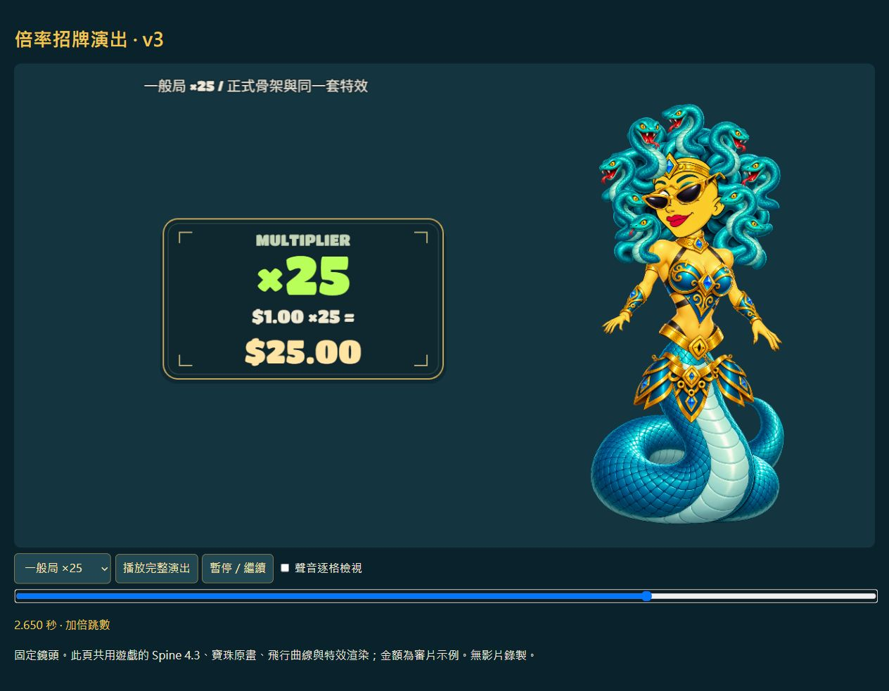

梅杜莎凝視 · 可交付版
正式獎圖、角色蛇髮、背景、盤框介面與音效已整合。九條蛇各自使用五節骨骼，角色採 Spine 4.3.13，包含 24 段動作。
本地完整建置與動作檢查通過；Stake Engine 上傳驗收由使用者操作。角色語音為合成預聽。倍率招牌演出 v3
拉下墨鏡、瞳孔聚焦、雙眼綠光、石化紋理、聚能寶珠、加速飛行與命中停頓，搭配 13 支重製音效。倍率數字維持正向，中央顯示原得分 × 倍率 = 最終得分，免費遊戲另列 TOTAL 累積倍率。

實際遊戲畫面
15 次免費遊戲已完成本地回放，累積倍率 ×110，總得分 $198.90，可返回主遊戲。鏡頭、盤框與建築保持固定。
查看正式介面、倍率球與大獎牌素材